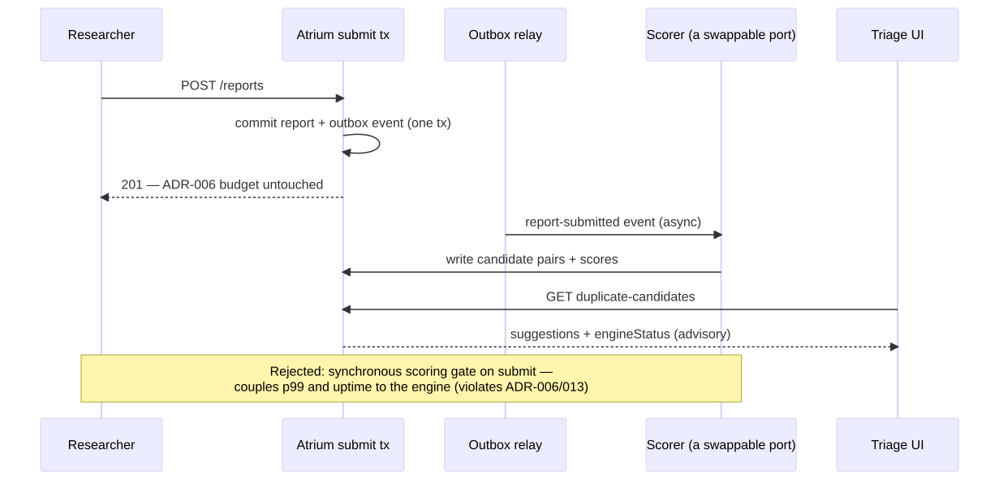

Chapter 16 — The Architect's Chair
The ask arrived the way the worst asks always do: in a hallway, between meetings, dressed as a small thing.
"Maya — quick one." The CTO didn't break stride. "We need duplicate-report detection. Researchers keep filing the same vuln five times, triagers are drowning, and Northbeam brought it up at the QBR. Something by Q1?"
Back at her desk, Elias had already forwarded the thread. His entire message was one line: Design it out loud. The whole team. Friday.
It was December. His last month. Nobody had said the word exam, which was how she knew it was one.
The old instinct — open the IDE, scaffold a DedupController, let the design emerge from the typing — was muscle memory from her Meridian years, and it was the trap. You didn't find out what a duplicate was by writing a loop over reports. So she spent Wednesday not designing; she spent it with Marisol.
"What is a duplicate?" Maya asked. "Same root cause? Same endpoint? Same payload?"
"Same root cause," Marisol said immediately. "Two XSS reports on different pages of the same template engine — that's one vuln. The engine will never know that. A human has to decide."
"And what does a wrong answer cost?"
Marisol thought about it. "A missed dupe wastes an hour of triage. A false merge buries a real vulnerability under a closed one." She paused. "One of those is annoying. The other one is the company."
Maya wrote that sentence at the top of the design doc. Then five questions, answered in writing before any boxes: what is a duplicate, who decides, what does each wrong answer cost, what's the volume and latency budget — four hundred reports a week, thirty-ish dupes, suggestions worthless if they arrive after triage starts — and what number means success. Only then did she start drawing.
⚖ Your move, architect
This time the fork comes before the room does. You have what Maya had on Wednesday night — Marisol's asymmetry, the numbers, the binder behind you. Design the shape before she speaks: where does similarity scoring run?
- A — Synchronous check on the submit path. The scorer runs inline; suggestions exist the instant the report does. No pipeline to build.
- B — Async pipeline, advisory suggestions. Submission commits and returns; scoring rides an event off the outbox; candidates surface seconds later, and only a human merges.
- C — Nightly batch dedup. One job, off-peak, marks candidate pairs while everyone sleeps. The cheapest possible build.
The trade-offs, since you've committed: A couples submission availability and latency to the cost and uptime of a scoring engine — ADR-006 and ADR-013 violated on their face; when the scorer has a bad afternoon, submissions do. C wins on cost and fails the requirement: duplicates burn triager hours same-day, so the binding budget is the triagers' morning, not the API's p99. B is what Maya drew — her whiteboard walk is the answer key, and the grilling that follows is your pressure test; score yourself against the room.
The investigation
Friday, ten a.m., the whole team in front of the Wall. Maya opened not with boxes but with the five questions and Marisol's asymmetry, because every decision downstream hung off it: the system suggests; a human merges; nothing auto-closes, ever.
The sequence she walked was fixed: clarify the spec, then contract, data model, transaction and consistency boundaries, failure modes, observability, rollout. The room had watched it assemble all year without hearing it named — the architect's kata — and the proof sat in the repo: ADR-005 the contract step, ADR-008 the consistency step, ADR-013 the failure step. Friday would quote the trail, not relitigate it.
She sorted the decisions before drawing any of them. "Most of this is a two-way door," she said. "The threshold, the scorer behind its port, the flags — if we're wrong, we walk back through. Cheap experiments, kept options." The API contract and the merge's consistency promise were not: those harden the moment other people build on them. ADR-005's v2 contract and ADR-008's consistency line had been the year's one-way doors, committed decisively and front-loaded, because deciding later means deciding under worse information, after others have built on your indecision. The architect's first skill was knowing which door you stood in before choosing a way to walk through it.
Then the contract:
GET /api/v2/reports/9f3c.../duplicate-candidates
Authorization: Bearer eyJ... # triager role required
HTTP/1.1 200 OK
Content-Type: application/json
{ "candidates": [
{ "reportId": "41ab...", "score": 0.91,
"title": "Stored XSS in program description", "status": "TRIAGED" }
],
"engineStatus": "LIVE" } # or "DEGRADED" — honest absence, never invented data
Then the data model — candidate pairs with scores and a human decision column, and a merged_into self-reference instead of deletion, because a false merge had to be reversible with full history:
create table report_candidate_pair (
id uuid primary key,
report_id uuid not null references report(id),
candidate_id uuid not null references report(id),
score numeric(4,3) not null,
decided_by uuid references users(id),
decision text check (decision in ('CONFIRMED','REJECTED')),
created_at timestamptz not null default now(),
unique (report_id, candidate_id)
);
alter table report add column merged_into_id uuid references report(id);
-- merged reports keep their rows, their audit trail, their researcher credit
Transaction boundaries next. Candidate scoring was async and eventually consistent, because submission must never block on a similarity engine; it rode the report-submitted event off the outbox the Notifications split had already laid (the event row commits in the same transaction as the report; a relay publishes it afterward). The merge was the opposite: a small transactional core in the service layer, optimistic locking on both reports, a 409 if the version moved. The two halves sat at opposite ends of the Wall's consistency spectrum: the suggestion could lag by seconds, priced and signed for in advance; the merge could not lag at all — one commit or it's corruption.
She drew the pipeline under the contract, the rejected road crossed out beside it:

The port on the diagram was load-bearing. The design doc carried the only code Friday needed — one interface, today's adapter behind it; the evolvability claim rested on the line between them:
/** The port — ADR-016: accuracy evolves behind this line. */
public interface DuplicateScorer {
List<ScoredCandidate> score(ReportFingerprint fresh, ProgramCorpus corpus);
}
@Component
class TrigramScorer implements DuplicateScorer { // today's adapter
public List<ScoredCandidate> score(ReportFingerprint fresh, ProgramCorpus corpus) {
return corpus.stream()
.map(c -> new ScoredCandidate(c.reportId(), trigram(fresh, c)))
.filter(s -> s.score() >= 0.65).toList();
}
}
// next year: EmbeddingScorer implements DuplicateScorer — same port, same merge
// invariant, and shadow mode re-runs against the new engine for free
The grilling started before the marker was capped.
Idris, capacity: "Why async? Sync gives the triager suggestions the second the report lands."
"Sync also couples submission latency to the scoring engine," Maya said. "We made that mistake with Cortexa and bought a site outage. Argue it the other way: async means a triager might open a fresh report and see no suggestions yet. That costs minutes. Sync failing costs submissions. I'll take minutes." And no, the engine didn't need its own runtime. Scoring was I/O-bound batch work on virtual threads: each blocking call parks the thread and frees its carrier. The pinning tax — a carrier stuck under a synchronized block — was already paid in November. Reactive would buy backpressure they didn't have a queue deep enough to need.
Idris wasn't finished. "Then why isn't scoring its own service? We just split Notifications. The precedent's sitting right there."
"The seam decides, not the precedent," Maya said. "Merge shares transactions and a schema with reports — cut there and every false merge becomes a saga run by eleven people. Scoring is the only async piece, and it already consumes outbox events, so the cut line is drawn if it ever needs its own scaling profile. Until then it's a module with a boundary, not a service with a network bill." And October's context map had already settled the placement: duplicate detection serves Marisol's queue, so it lives inside the Triage boundary — the same map that let Notifications leave, because nothing transactional held it there. ADR-014's exit criteria sat one tab back if scoring ever earned its own pager.
Priya, data model: "Merge uses JPA, but the scoring path is JdbcClient. Why both?"
"The merge is a write with invariants — versions, cascades, audit. That's what a persistence context is for. Scoring reads forty thousand rows to build pairs; dragging those through a session buys dirty-checking overhead and lazy-loading landmines for zero benefit. Different jobs, different tools — and the trade-off is two data-access idioms in one codebase, which we document."
Lena, the user's side: "If a triager sees a 0.91 and trusts it blindly?"
"Then the UI's job is to make trust expensive. Side-by-side diff before confirm, the score shown as evidence, not verdict. And the precision metric tells us if we're training them to rubber-stamp."
Elias asked exactly three questions, each a layer deeper than the last. "What happens when the similarity engine returns garbage at p99?"
"Degrade to nothing, honestly. engineStatus: DEGRADED, empty list — the severity-pending badge from the Cortexa cascade. A fallback that invents candidates is a false merge we've scheduled in advance."
"Who notices the garbage before a triager does?"
"Shadow mode does. Six weeks where the engine scores everything, shows nothing, and gets measured against the merges triagers make by hand. The metric gates the rollout: shadow, then triager-visible, then researcher-visible, each behind its own flag; rollback is turning one off."
"And when two triagers merge the same pair in the same minute?"
"@Version on the report, second writer gets a 409 and a refreshed view." In eight years of hand-written UPDATEs she had never once shipped a version column — last write had always, silently, won. Here that had a body count: a five-thousand-dollar award the bank never saw, overwritten by a second writer. "Optimistic, not SELECT FOR UPDATE — contention is rare and the hold time is human think-time. A pessimistic lock across a coffee break is a queue; a version check is one retry."
Silence. Then Elias capped his pen — no green ink, nothing to correct — picked up his chair, and carried it to the back row. The chair at the whiteboard stayed empty behind her. It was simply hers.
The design doc's last page went into the binder that afternoon, sixteenth on the trail. Lena initialed the consequences line herself — a trade-off product hasn't signed is a complaint scheduled for later.
ADR-016 — Duplicate-report detection. Context: An exec ask with unstated load, accuracy, and workflow expectations, clarified to: ~400 reports/week, ~30 true dupes, suggestions worthless once triage starts, and a brutal cost asymmetry — a missed dupe wastes an hour, a false merge buries a live vulnerability. Decision: Similarity scoring runs as an async pipeline — outbox event on submission → scorer → candidate-pair suggestions surfaced to triage — never as a synchronous gate on the submit path; suggestions are advisory and only a human merges, because the domain owns truth; the scorer is a port inside the Triage context, swappable from trigram to embeddings without moving the boundary. Consequences: Submission latency keeps ADR-006's budget; the feature degrades to honest absence when the engine is down, per ADR-013; accuracy can evolve behind the port without touching the merge invariant — at the price of eventual suggestions, seconds rather than instant, accepted by product on the record.
What the senior sees
Monday's brick ceremony came with the handbook she'd written after the three-a.m. incident (a missing timeout parking every request thread in socketRead0); the handbook ended with five drills. She ran Priya through them over coffee, rapid-fire, the way Elias had once run her.
"Intermittent LazyInitializationException in a scheduled job."
"No request, so no session to hide behind," Priya said. "Find where the persistence context closes, then ask who touches the entity after it. Fix the query — projection or fetch plan. Don't resurrect the session to comfort the bug."
"Transaction that doesn't roll back."
"Two suspects: a checked exception crossing the boundary under the unchecked-only default, or a catch swallowing the rollback signal before the proxy ever sees it. And before either — check the call actually crosses the proxy. Self-invocation walks around the mirror."
"Endpoint slow under load, CPU idle."
"Thread dump before theories. Count the stacks parked in socketRead0. The missing timeout is the bug; the pool size is just the blast radius."
"Bean not created."
"--debug, read the ConditionEvaluationReport, find the negative match. The bean didn't vanish — a condition told it not to exist, and the report names the condition."
"401 on a route that should be open."
"The verdict happened in front of the front door, before the DispatcherServlet saw it. List the SecurityFilterChain matchers in order — first match wins — and under deny-by-default, a missing allow is a bug you can grep for."
Five symptoms, five chains, each running from the visible symptom to the mechanism behind it. Not once had Priya said Spring just does that. Somewhere around the third drill Maya realized the actual job now was not having answers but installing the shape of one in someone else: claim, mechanism, trade-off, failure mode. She no longer noticed herself using the four beats.
She pushed one beat further than Elias ever had. "Again — and this time name the -ility each one threatened."
"Operability, integrity, availability, evolvability, security," Priya said, barely pausing on the fourth. This was succession, Maya thought: the four beats plus a named -ility made a decision portable, able to outlive whoever made it. Architecture living in one head was a bus factor of one wearing a title.
The fix
Priya's PR for the merge flow landed Tuesday. It worked. It demoed beautifully. Maya printed the diff.
@RestController
@RequestMapping("/api/v2/reports")
class MergeController {
@Autowired ReportRepository reports; // field injection
@Autowired AuditLog auditLog;
private static final Logger log = LoggerFactory.getLogger(MergeController.class);
@PostMapping("/{id}/merge")
Report merge(@PathVariable UUID id, @RequestBody MergeRequest req) {
Report dupe = reports.findById(id).orElseThrow();
Report canonical = reports.findById(req.canonicalId()).orElseThrow();
dupe.setMergedInto(canonical);
dupe.setStatus(Status.DUPLICATE);
try {
reports.save(dupe);
auditLog.record(dupe, canonical);
} catch (Exception e) {
log.warn("audit failed, continuing", e); // "handled"
}
return dupe; // entity, straight to Jackson
}
}
⏸ Your call. It demoed clean and the tests are green — before the pen moves: count what breaks here, when each one fires, and which -ility every line bleeds.
Forty-one comments, all hanging off her review checklist: proxy traps, N+1, transaction boundaries, leaked entities, security gaps, untested branches. No transaction boundary, so the status write and the audit write committed independently — the silent commit again. No version check, so two triagers could repeat Marisol's lost update. No @PreAuthorize, so any researcher could merge a competitor's report closed. The candidate loader elsewhere in the PR fetched researchers one query per row — the thousand queries in miniature. The lazy researcher association would fault when Jackson serialized the entity after the session closed. The catch swallowed the audit failure — a caught exception is a decision; make it on purpose. The happy path was tested; the 409, the 403, and the degraded engine were not. The field injection would never have reached main — the ArchUnit rule from the February incident (field injection lets a bean be built with new and run with null dependencies) would have failed the build — but the comment went in anyway: the robot says no; the review teaches why. The only empty checklist line was proxy traps. Priya had met the smoke cloud in September — a this. call dispatches on the raw object, bypassing the proxy where the annotations take effect — and some lessons only need to cost you once.
Comment #1, on a line that worked: "Works is not done — what happens when this entity meets Jackson after the session closes?"
She was halfway through writing it before she recognized the sentence. She let it stand.
Priya's rewrite landed in two days — slim controller, a MergeService owning the @Transactional core, DTO records at the boundary, the audit on REQUIRES_NEW, all four failure paths tested. Her commit message entered team lore: Done, not just working.
Priya had one question left, at Maya's desk, test class open. "The Testcontainers Postgres. I never configure a URL anywhere. How does Boot even know to wire it?"
A year ago Maya would have said auto-configuration and meant it as an answer. Instead she pulled up the framework source. In eight years at Meridian there had been no framework to read — every line in production was theirs, and she'd assumed framework source was unreadable. Somewhere this year it had become conversation.
// condensed from spring-boot-autoconfigure (Boot 4.0.x)
@AutoConfiguration
@ConditionalOnClass(DataSource.class)
public class DataSourceAutoConfiguration {
@Bean
@ConditionalOnMissingBean(JdbcConnectionDetails.class)
PropertiesJdbcConnectionDetails jdbcConnectionDetails(DataSourceProperties props) {
return new PropertiesJdbcConnectionDetails(props);
}
}
"Read the condition," Maya said. "Auto-config only builds connection details from properties if nobody else has. Your @ServiceConnection is found by a test context customizer, which asks a container-aware factory for a JdbcConnectionDetails built straight from the live container — host, mapped port, the generated password — and registers it as a bean definition while the context is still being prepared. The conditions get evaluated later, inside the configuration-class post-processor — same column of the Wall as the lifecycle post-processors. So by the time Boot reads this class, your bean already exists, @ConditionalOnMissingBean fails, and auto-configuration backs off. The rule from the magic show: your own bean always wins — and now you've read why."
While the source was open, Maya steered her one class deeper, into CommonAnnotationBeanPostProcessor. "And here's your @PostConstruct — not JVM magic, just an annotation this post-processor finds and invokes in the before-init phase. Build the bean with new and there's no post-processor, so no init call — it silently never runs. February's lifecycle column, in the source."
Priya stared at the screen. "It was never magic."
"No," Maya said. "It was never magic."
The announcement came the Friday after — principal architect, effective January — and everyone pretended the design review hadn't been the interview; nobody believed anyone. Elias cleared his desk over an afternoon, refusing help. On Monday his desk was empty and Maya's wasn't: the green pen lay beside the dented yellow Canary, under a sticky note in green ink. It was never magic. — E.
That same week a line in the QBR notes mentioned, third-hand and unsourced, that a larger platform had been asking analysts about Glasshouse — only a rumor, and December had no room for weather that hadn't arrived.
The January Wall tour fell to her now; Priya had inherited the request-trace walkthrough and acquired a mentee of her own. Maya walked the new hires down the whole year of ink: the lifecycle column, the proxy smoke cloud — this. goes around the mirror — the config-precedence ladder, the filter chain in front of the front door, the persistence panel, the breaker's three states. Then she drew one blank column for the year to come and traced the Request Journey a final time, socket to database and back. One thing was new: green numbers, one beneath each scene — ADR-002 under the lifecycle column, ADR-003 under the smoke cloud, ADR-004 beside the precedence ladder, ADR-010 on the filter chain, ADR-007 on the persistence panel, ADR-013 inside the breaker's states. The binder and the Wall were one document now, read in two directions; the trail was the tour.
"So Spring just handles all that automatically," one of the new hires said.
Maya smiled, and uncapped the green pen.
"Show me the mechanism."
The debrief — Ch.16, The Architect's Chair
The final gate: design a service end-to-end from a vague spec, out loud, and survive follow-ups on every layer. Claim: a senior turns "we need duplicate detection" into a system by interrogating the requirement before drawing anything, then designing in a fixed sequence — clarified spec → API contract → data model → transaction and consistency boundaries → failure modes → observability → rollout. Mechanism: each layer is pinned to a real mechanism, not a wish — suggestions ride async events off the outbox so submission never blocks on the engine; the merge is a small
@Transactionalservice-layer core with@Versionoptimistic locking and a 409 on conflict; engine failure degrades to honest absence behind a status flag; a shadow-mode precision metric gates each rollout stage. Trade-off: eventual consistency means a triager may briefly see no suggestions (minutes lost, never submissions); optimistic beats pessimistic because contention is rare and hold time is human-scale; shadow mode spends six weeks to buy a precision number before users can be harmed. Failure mode: the design fails if a wrong answer can act without a human — auto-close on a false merge buries a live vulnerability — or if the fallback invents data instead of admitting absence, or if rollback requires anything more than turning a flag off.
THE ARCHITECT'S LENS
- -ilities at stake: Judgment — every -ility at once, weighed out loud: the submit path's availability and performance against suggestion freshness; integrity above everything, because a false merge is the company; evolvability behind the scorer port; operability in flags, shadow metrics, honest degradation. The final exam is pricing the ledger's columns against each other, in one design, in public.
- The ADR: ADR-016 — duplicate detection as an async advisory pipeline behind the Triage context: outbox event → scorer port → candidate suggestions; only humans merge; ADR-006's budget kept, ADR-013's degradation honored, eventual suggestions accepted on the record.
- Rejected alternatives: a synchronous scoring gate on submit (couples the sacred path's latency and uptime to the engine — ADR-006/013 violated on their face); nightly batch dedup (cheap, too slow — the binding budget is the triager's morning); a separate scoring service (ADR-014's exit criteria unmet — a module with a boundary, not a pager); anything that auto-closes (a false merge scheduled in advance).
- Fight or lean: Lean, almost everywhere — the feature is assembly of rails already paid for: the outbox,
@Version, virtual threads, the slices, the flags. The one fight is with the instinct to make the machine decisive: where the domain says a human owns truth, the framework suggests — and the architecture makes trust expensive. - Which door: almost all of ADR-016 is two-way — ports, thresholds, flags, cheaply reversible; the book's one-way doors were Ch.5's public API contract and Ch.8's consistency contract, committed decisively because others build on them.
Story anchors
- The empty chair at the whiteboard → the senior design sequence: clarify the spec, then contract → data → transactions → failures → observability → rollout.
- Comment #1 on Priya's PR → code review as architecture: proxy traps, N+1, missing transaction boundaries, leaked entities, security gaps, untested failure branches.
- The green pen on the Boot source → the senior reflex: read the
AutoConfigurationand its conditions —@ConditionalOnMissingBeanis why your own bean wins. - The green numbers under the year of ink → the trail is the tour: every Wall scene carries its ADR, the binder and the whiteboard one document read in two directions.
Interview ammo
- Design duplicate-report detection end-to-end, out loud. — Clarify the cost asymmetry first (missed dupe = an hour; false merge = a buried vuln), then: suggestion API + candidate-pair model with a reversible
merged_intoFK, async scoring off events, a small optimistic-locked merge transaction, honest degradation, precision metrics, shadow-mode rollout behind flags. - What happens when your similarity engine returns garbage at p99? — Degrade to honest absence (
DEGRADEDstatus, empty list), never auto-close; shadow-mode precision catches the drift before a triager ever acts on it. - Why optimistic locking on the merge instead of
SELECT FOR UPDATE? — Contention is rare and hold time is human think-time; a version check costs one 409-and-retry, while a pessimistic lock holds a row hostage across a coffee break. - Architect follow-up — Your similarity scorer needs to get smarter next year (trigram → embeddings) without destabilizing triage: where does that flexibility live? — Behind a port inside the Triage context: the scorer is an adapter consuming outbox events and writing candidate pairs, so accuracy evolves by swapping the implementation while the contract, the merge invariant, and the rollout flags never move — and shadow mode re-runs against the new engine for free.
Pointers → Playbook Ch.12 + the whole trail · examples/ (all) · Appendix F